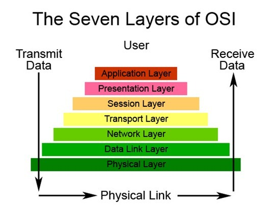
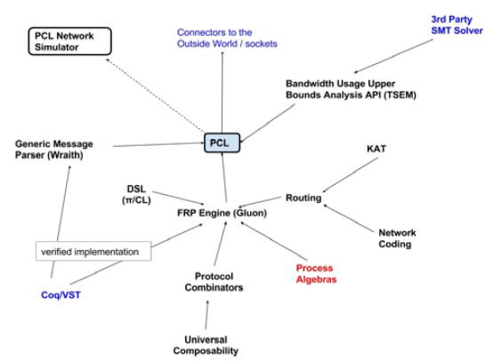

petsIntroduction
Communication Protocol is a system of rules in digital formats. Computing systems are required to use this to communicate with each other.
It is implemented in hardware and software.Computer network cannot exist without it.
For examples, File transfer protocol(FTP), Post office protocol (POP3), Hypertext transfer protocol (HTTP)and etc.
Protocols are split into layers, each part accomplishes a particular sub-task and interacts with the other parts.
Here is the introduction video:

(OSI:Open Systems Interconnection)
gradeResearch at UCL
Reseachers
Kyle Jamieson and Brad Karp
Aim of Research
In wireless hardware, how could the network protocols adapt so as to get better performance,
if they were able to detect the full characteristics of the wireless channel?
One of the wireless projects-Software Radio
In standard wireless hardware, digital signal processor chips get a wireless signal,
synchronize it, demodulate it, decode it , and provide the answer to the software.
But in software radio case, the whole process is done in software.
This enable the UCL research team to build network.
For example,today’s network protocols run congestion control algorithms to decrease their transmission speed when the network is busy.
However, what if the software radio could inform the congestion controller the current amount of radio interference,
therefore, the congestion controller can back down smoothly?
Word definition
- demodulate: converting AC signal into DC signal which can be read by the computer that is receiving the signal.
- congestion: it is the state of network, which results in reduction of response time and loss of data packet.
extension Other Research
1. Programming and Formal Verification of Network CommunicationProtocols Implementations (Birkbeck University)
Researcher
Maxim Belov
Aim of Research
1. Finding ways to use modern programming languages to implement network protocols.
2. Making sure the context of the modern embedded software development
industry is relevant to the modern programming languages, so that developers have choice to choose which languages.
3. The ultimate goal is to develop a programming framework to be implemented as PCL, so that
software engineers can develop communication protocol stacks.

Research methods
Each network protocol specification addresses two large topics:
1. Protocol messages processing. Message processing usually
includes: parsing, validation, encryption, compression.
2. Higher level semantics definition of the protocol. The semantics of the
protocols can react on the messages correctly, for example, authentication and etc.
They are going to build PCL by using the updated data collected in each of these fields.
Then, they use it as a test platform to research the problem of formal verification of protocol combinations
which is a collection of communication subsystems using protocol stacks.
Problem addressed from working on PCL
1. Suitability for programming language (e.g. C11) when the message is parsing DSEL.
2. Implementation of DSL, which would allow us to program the high level logic of communication.
3. Making the library as advanced as possible.
4. Using PCL to calculate the network bandwidth used by traffic.
Word definition
- framework: a supporting structure or platform which allows you to use its tools to build something.
- stack: a pile of objects, e.g.first object gets into it will be the last one to get out of it.
- parsing: breaking the whole information or data into lots of small chunks.
- validation: a checking program installed in computer to make sure the entered data is acceptable.
- semantics: in terms of network, it is used to describe the relationship between concepts.
- DSL: Digital Subscriber Line, it is a communication medium that you need to transfer data along with internet cable.
- PCL: Protocols Combinators Library, it can be linked with the industrial programming languages.
- DSEL: domain-specific embedded language, it is from programs written in general purpose language to obtain a specifc function.
2. Toward Reducing Control Overhead in Wireless Networks (MIT)
Researcher
Prof. Eytan Modiano, PI
Matt Johnston, graduate student
Abhishek Sigha, graduate student
Aim of Reseach
1. Understanding the relationship between control overhead and network performance by developing a framework.
2. Research the outcome of the rate of control information on delay and network utility.
3. Controlling a network with the least amount of overhead by developing mechanisms.
4. Study what do control overheads do in multi-hop network.
Word definition
- overhead: it is the additional data that you also have to transfer when you are transferring a data.
- utility: it is the similar meaning to tool.
- mechanisms: it is the principle or system of all parts to work together.
- multi-hop network: when a packet goes from a source to a destination, it has to go through 2 or more networks.
castReferences
- Protocols definition: https://www.techopedia.com/definition/25705/communication-protocol
- UCL research: http://nrg.cs.ucl.ac.uk/research.html & http://nrg.cs.ucl.ac.uk/projects/wireless.html
- Birbeck research: https://www.dcs.bbk.ac.uk/site/assets/files/1023/phd-poster-maxim-belov.pdf
- MIT research: http://cnrg.mit.edu/protocol-information